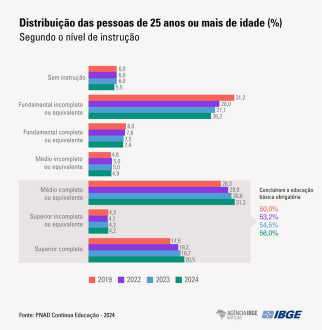

Visão Geral
Sistema de Gerenciamento Escolar
Este projeto apresenta o desenvolvimento de uma Interface de Programação de Aplicações (API) para a Análise de Desempenho Escolar, com o objetivo de Identificação de Fatores de Risco. Esta ferramenta visa identificar, de forma preditiva e automatizada, estudantes com potencial risco de declínio de rendimento, atraso no percurso escolar ou evasão, proporcionando, assim, suporte analítico para a implementação de intervenções pedagógicas mais assertivas e eficazes.
Taxa de Escolarização - 93,4%
Abaixo do patamar estabelecido pela LDB (Lei de Diretrizes e Based da Educação Nacional)
Atraso escolar - 94.5%
Abaixo da meta estabelecida pelo PNE
18.5%
15 a 19 anos não se encontram estudando ou trabalhando
Apesar do alto acesso à educação, o sistema enfrenta gargalos persistentes na qualidade, adequação série/idade e conclusão oportuna do ciclo educacional.
- Problema Central: Milhões de jovens estão fora da etapa ideal de ensino ou sem a conclusão do Ensino Médio.
- Implicação: O sistema educacional, embora inclusivo no acesso, falha em identificar e intervir proativamente nos fatores que causam:
- Abandono.
- Evasão.
- Distorção idade-série.
- Consequência: Essa falha ameaça o desenvolvimento social e econômico do país.

Objetivos do Projeto
1
Desenvolver uma API Preditiva: Criar uma Interface de Programação de Aplicações (API) robusta para análise de desempenho escolar usando Machine Learning.
2
Identificar Risco Antecipadamente: Automatizar a identificação preditiva de estudantes em potencial risco de declínio de rendimento ou evasão escolar.
3
Fornecer Suporte Analítico: Oferecer suporte analítico e insights baseados em dados para a tomada de decisões pedagógicas assertivas.
4
Mudar Paradigma de Gestão: Promover a transição de uma gestão educacional reativa para uma abordagem proativa e preventiva.
5
Monitorar o Bem-Estar Estudantil: Integrar a análise de dados emocionais (humor) para gerar alertas de saúde mental para a equipe de apoio.
6
Garantir a Segurança dos Dados: Assegurar a segurança, criptografia e o estrito cumprimento da LGPD para todos os dados dos estudantes e usuários. .
7
Melhorar a Qualidade Educacional: Contribuir para a redução da evasão e da distorção idade-série, melhorando os indicadores educacionais.
8
Viabilizar Intervenções Personalizadas: Gerar planos de bem-estar personalizados e alertas de urgência para a equipe escolar intervir de forma eficaz.
9
Criar Ferramentas de Visualização: Desenvolver painéis administrativos e relatórios gráficos para monitoramento de tendências de desempenho e saúde mental.
10
Atingir a Acurácia Preditiva: Garantir que o modelo de Machine Learning atinja uma acurácia mínima aceitável na previsão de risco de evasão.
Tecnologias Utilizadas
React
Node.js
PostgreSQL
Docker
AWS
TypeScript
Redux
Jest
Fases do Projeto
1
Análise de Requisitos
Concluído
2
Design e Prototipação
Concluído
3
Desenvolvimento
Concluído
4
Testes
Concluído
5
Implantação
Concluído
JJ
JV
LP
NV
YX
Principais Conquistas
Redução de tempo administrativo
60%
Satisfação dos usuários
92%
Cobertura de testes
85%
Performance (tempo de resposta)
< 200ms
Feedback dos Usuários
"Plataforma intuitiva e muito eficiente!"
"Facilitou muito o acompanhamento das turmas."
"Excelente ferramenta para gestão acadêmica."